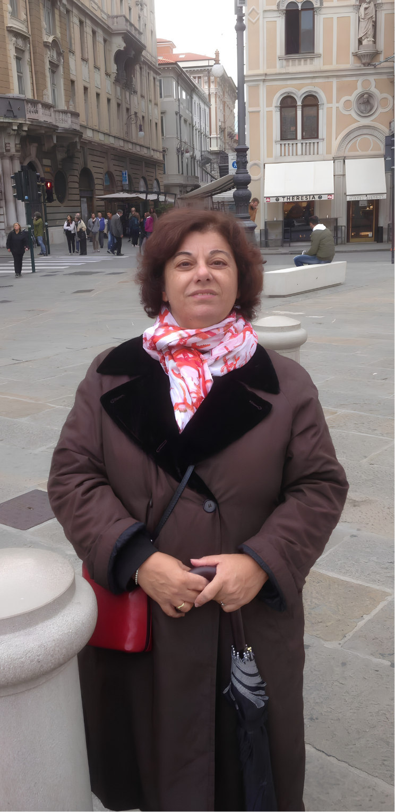

איטלקית לכל הרמות
ממתחילים ללא כל ידע קודם ועד לרמות מתקדמות: אוצר מילים, דקדוק, קריאה, כתיבה וביטחון בשימוש בשפה.
לפרטים על השיעוריםשלום לכולם! אני אדריאנה מלוני. אני מלמדת שפה וספרות איטלקית כבר למעלה מארבעים שנה, מאז תחילת שנות השמונים, ברחבי העולם ובמיוחד בישראל. יחד נבנה מסלול לימוד שמתאים לכם — מהצעד הראשון בשפה ועד להכנה לבגרות באיטלקית או למבחן B1 לצורך קבלת אזרחות איטלקית.
למתחילים, למתקדמים ולכל מי שאוהב את השפה האיטלקית

איטלקית בשביל הטיול הבא, בשביל הלימודים, בשביל העבודה או פשוט מאהבה לשפה. כל מסלול מותאם למטרות ולרמת הידע שלכם.
ממתחילים ללא כל ידע קודם ועד לרמות מתקדמות: אוצר מילים, דקדוק, קריאה, כתיבה וביטחון בשימוש בשפה.
לפרטים על השיעוריםליווי ממוקד לתלמידי תיכון לקראת בחינת הבגרות, מתוך ניסיון בהכנה לבחינה מאז 2012.
לבדיקת התאמההכנה ממוקדת למבחן השפה באיטלקית ברמת B1 הנדרש למבקשי אזרחות איטלקית.
לפרטים על ההכנהלמי שרוצה להעמיק בשפה, לתרגל שיחה ולגלות את הספרות והתרבות האיטלקית.
בואו נדבר באיטלקית
אני אדריאנה מלוני, ומלמדת שפה וספרות איטלקית כבר למעלה מארבעים שנה, מאז תחילת שנות השמונים, ברחבי העולם ובמיוחד בישראל. את דרכי בהוראה התחלתי בצרפת, עוד בתקופת לימודיי באוניברסיטת שטרסבורג, שבה סיימתי תואר בספרות מודרנית בשנת 1985, עם התמחות ברנסאנס האיטלקי והצרפתי.
בשנת 2000 הגעתי לישראל. במשך השנים לימדתי באוניברסיטה הפתוחה, במכון האיטלקי לתרבות בתל אביב ובמרכז הבינתחומי הרצליה (כיום אוניברסיטת רייכמן). במקביל העברתי הרצאות בספרות איטלקית והכנתי תלמידי תיכון לבחינת הבגרות באיטלקית.
את כותרות ההרצאות שהעברתי אפשר למצוא גם באתרי שגרירות איטליה בתל אביב והמכון האיטלקי לתרבות בתל אביב.
בשנת 2013 השלמתי את לימודי המאסטר בדידקטיקה של הוראת איטלקית כשפה שנייה (L2) באוניברסיטה לזרים בפרוג'ה. בשנת 2020 עברתי הכשרה באוניברסיטת סיינה להוראת השפה האיטלקית ולהכנה למבחן באיטלקית ברמת B1, הנדרש במסגרת ההליך לקבלת אזרחות איטלקית. מאז 2021 אני מתמקדת בהוראה פרטית, מתוך אהבה גדולה לשפה ולאנשים שלומדים אותה.
ניסיון בהוראה אקדמית, הכנה לבחינות והיכרות עמוקה עם התרבות האיטלקית — בשיעורים המותאמים לכל תלמיד ותלמידה.
נזהה את הרמה, תחומי העניין והיעד: שיחה חופשית, לימודים, עבודה, בגרות או מבחן אזרחות.
ההוראה מותאמת לצרכים ולנקודת הפתיחה של כל תלמיד, מתחילים ומתקדמים כאחד.
השפה נפתחת דרך שיחה, קריאה והיכרות עם עולם עשיר של ספרות ותרבות איטלקית.
כאן תמצאו תשובות קצרות על הלימודים. אפשר גם ליצור קשר ולספר לי מה אתם מחפשים.
בהחלט. אני מלמדת איטלקית בכל הרמות, כולל מתחילים ללא רקע קודם.
כן. אני עוסקת בהכנת תלמידים לבחינת הבגרות באיטלקית מאז 2012, כולל ניסיון בהוראה בתיכון עירוני א׳ בתל אביב.
כן. אני מציעה הכנה ייעודית לשפה האיטלקית ברמת B1 הנדרשת בהליך בקשת האזרחות, בהתאם לצרכים של התלמיד או התלמידה.
פונים אליי, מספרים בקצרה על הרמה ועל המטרה, ובשיחה נתאם את פרטי הלימוד ואת המתכונת המתאימה.
יש לכם שאלות על השיעורים, לא בטוחים מהי הרמה המתאימה או פשוט רוצים לקבוע שיעור? כתבו לי באימייל או ב-WhatsApp ואשמח לעזור.
לכל שאלה, להתייעצות על רמת הלימוד המתאימה או לקביעת שיעור, אפשר ליצור איתי קשר ישירות.
אפשר לשלוח לי אימייל עם כל שאלה, כדי למצוא יחד את הרמה המתאימה לכם, או פשוט כדי לקבוע שיעור.
שליחת אימיילאפשר לשלוח הודעת WhatsApp עם שאלות, להתייעץ לגבי הרמה או לקבוע שיעור. אנא שלחו הודעת WhatsApp לפני שיחת טלפון.
שליחת הודעה ב-WhatsApp